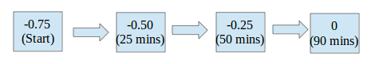
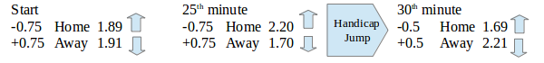
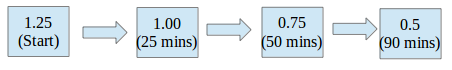
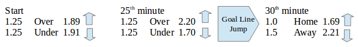
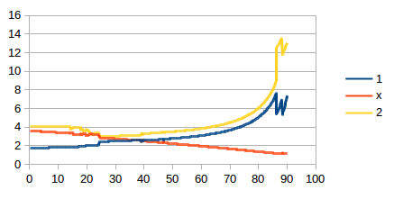

Previously, we have discussed how we can use equations and distributions in order to predict the odds of a game. However, in most cases the theoretical odds are not always what is seen in actuality. In this article, we will discuss the theoretical odds movement and statistical influence of the in-running game that makes the odds deviate from the expected odds movement.
What is expected?
Asian Handicap
We will discuss the Asian Handicap (AH) first. As a general rule, as time goes by without a goal, the handicap is expected to go to 0. For example, if the handicap is at -0.75 at the start, (-0.5/1):

It may go to level ball (0) handicap direction as time goes by. As for the actual odds, for the side that is giving (favorite) we can expect that side to have increasing odds. In this example, home is giving:

The odds will go to a certain ceiling price or the highest price the bookmaker will offer for the certain handicap. If it reaches that price, it will go back to the floor price or the lowest price the bookmaker will offer but with a different, smaller handicap. This is the case for the giving team. In our example, at the 25th minute the home odds is 2.20 at -0.75; at a certain point it will go to the ceiling price (around 2.25). Between the 25th to the 30th minute, it reaches the ceiling price and goes to the next handicap in line, -0.5 but now with lower odds.
Over Under
The same goes for the goal line. For example, if the game is expected to have 1.25 (1.0/1.5) goals, the OU odds will go to the smallest goal line possible:

The smallest goal line is computed as the total goals + 0.5. In the example above, since there was no score at the 90th minute the smallest goal line possible is 0.5. The odds movement is like that of AH:

The over odds become bigger and bigger until they reach the ceiling price. The moment it reaches the ceiling price, it will jump to the next goal line until it reaches the smallest goal line possible.
1×2
The 1×2 market is somewhat influenced largely by the AH market. To better understand what the theoretical odds are without any goal or red card, I dug up an old match dated 18-Oct-14 of NSC Minnesota Stars vs New York Cosmos with NO goal. In this game, NSC (Home) is favored with a -0.5 handicap. After extracting the odds from the odds history we have this graph:

As we can see at the start, the home has the lowest odds as expected since it's the favorite. As time goes by, the Home and Away odds become larger and larger exponentially. The draw odds just linearly drop. At the end of the match, the draw odds are the smallest.
← Back to Sports Betting